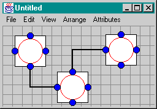
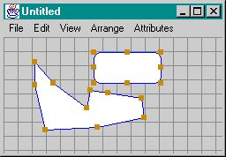
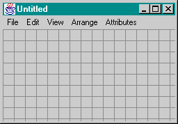
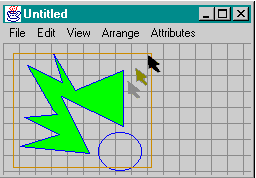
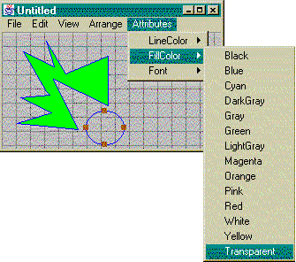
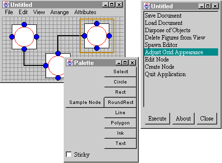
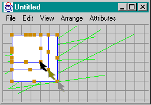

This file has not been updated for GEF v0.6 yet.
The Design of GEF (the Graph Editing Framework)
Overview:
What is GEF?
GEF is a java class library that supports the construction of
graph editing applications, i.e., applications that include the
ability to draw structured and unstructured diagrams. GEF itself is
not a drawing program, it supports the construction of custom drawing
programs for particular domains.

Why design a graph editing framework?
Many research projects need simple visualizations of models that
can be viewed as connected graphs. Having a good graph editing
framework would save a lot of people a lot of work and would make
better research products. The hard part is making a framework that
provides substancial value to a wide range of people.
Also, designing a graph editor is a very satisfying task. The
design can be very concrete in its object-oriention, dimentions of
extensibility are easy to imagine, the resulting tool is fun to use.
Coming up with a good design that is powerful and adoptable is very
chalenging, but satisfying.
Several people have already implemented graph drawing tools. I
needed one that was written in Java and could be freely distributed.
Requirements
When I started the project I set these goals:
|
What
|
Why
|
|
Edit connected graphs
|
SE concepts modeled well by graphs
|
|
Nodes, Ports, Arcs
|
More powerful than simple Nodes and Arcs
|
|
Multiple views on graphs
|
Allows separation of concerns
|
|
Standard look-and-feel as much as possible
|
Allows self-guided demos over the web
|
|
Drawing capabilities like MacDraw
|
Unstructured annotations improve most tools
|
|
Potential users can understand and use GEF in less than
10 weeks
|
Lowers adoption barriers and allows undergraduates to
contribute
|
|
New features can be added without modifying the framework
itself
|
General library design guideline. Simplifies releases and
integration of contributed code
|
|
Runs in java
|
Good language. Gives better demos.
|
|
Good performace even on slow machines
|
Important for web demos
|
For a current list of GEF features, click
here.
Design Overview
There are nine major concepts/classes (and about 90 minor ones):
The requirement that new features can be added without
modifying existing code had the largest impact on the design. The
most obvious design would have involved a heavy-weight
Editor object that provides lots of functionality, and could
be extended via subclassing. I rejected that because it made the code
less understandable, and because people need to be able to pick and
choose features, not just add more.
- Editors are "root objects" that hold together the
objects that really do the work. An Editor does no work
itself, it just coordinates the other objects. Desipte this
design, Editor is still the largest and most complex
class.
- Modes interpert user input and instantiate
Actions.
- Layers contain the objects to be drawn.
- DiagramElements are the objects to be drawn.
- NetPrimitive is the parent class of all Nodes, Ports,
and Arcs.
- Actions modify the state of the model, record
individual modifications.
- Selections indicate the target of the next
Action.
- RedrawManager does efficent screen updates.
- Palette contains buttons for common functions (no CRC
card).
- Guide constrains user mouse coordinates to help make
an organized looking diagram. (no CRC caard).
For a OMT diagram showing many of the classes of GEF, click here.
Editor
|

An Editor in its own window frame showing a
LayerGrid and no DiagramElements. The menu
is part of the editor. Editors can also exist in
the web browser's window frame.
|
Responsibilities
- Serve as a root object for applications
- Coordinate the activity of other objects
- Pass events to Modes for interpretation
- Keep track of Selections
- Execute Actions in a safe context
- Provide menus, if appropriate
- Store current default line color, fill color, etc.
- Record Undo History (future)
Collaborators
- Mode
- Selection
- Layer
- RedrawManager
- Action
|
|
Mode
|

ModeSelect at work. The user has dragged the
mouse, starting from blank space in the lower left to the
upper right. The selection rectangle is drawn by
ModeSelect.
|
Responsibilities
- Interpert user input
- Instantiate Actions for execution in the
Editor
- Determine the next Mode, if needed
- Draw (transient) graphics to indicate state
- ModeModify takes care of moving and resizing
- Subclasses of ModeCreate create
DiagramElements
Collaborators
|
|
Layer
|
Here are three layers: LayerGrid computes and
draws the backgronud grid, LayerDiagram stores and
draws some DiagramElements, LayerComposite
contains these two Layers and maintains
back-to-front ordering of sublayers.
|
Responsibilities
- Draw objects
- Notify dependant Layers or Editors
of changes
- Pass events to DiagramElements
- Maintain back-to-front ordering of
DiagramElements
Collaborators
|
|
DiagramElement
|

Here are a FigCircle and a FigPoly,
both are subclassed from DiagramElement.
|
Responsibilities
- Draw itself
- Notify dependents of state changes
- Handle some events, e.g., removing a vertex from a
polygon
- Specify its perfered type of Selection
- Keep track of its own line color, fill color, ...
- Perspectives are DiagramElements
that present a NetNode, ArcPerpectives
present NetArcs
- FigList is a DiagramElement that
contains others
Collaborators
|
|
NetPrimitive
|
Shown here are three Perpectives and two
ArcPerepectives. Not visible are the three
NetNodes, twelve NetPorts, and two
NetArc that represent the graph.
|
Responsibilities
- NetPrimitive is an abstract superclass for
NetNode, NetPort, and NetArc
- Any NetPrimitive can have an underlying
application object
- NetNode represents a graph node
- NetPort is a connection point on a node
- NetArc is an arc between ports
- NetNodes can handle events
- NetPort and NetNode check for valid
connections
Collaborators
- Perspective
- ArcPerspective
- Arbitrary application objects
|
|
Action
|

Buttons on the Palette contain Actions
that are executed in the Editor when the button is
pressed. Actions can also be contained in menu
items or selected from a list. The "About" button gives
user-level docuementation on the selected Action.
|
Responsibilities
- Modify the document or environment in some way, e.g.,
delete a DiagramElement, save document, or
change the Mode of the Editor
- Record enough information to undo itself , and
provide ability to undo itself (future)
- Provide a descriptive name and URL to user-level
docuementation
Collaborators
|
|
Selection
|
Three Selection objects: two
SelectionHandles that are visible, and one
SelectionMultiple that contains them.
|
|
Responsibilities
- Draw indications of which DiagramElements
are selected, e.g., handles
- Pass messages to the selected
DiagramElements
- SelectionMultiple contains other
Selections
Collaborators
|
|
RedrawManager
|

As the user resizes a FigRect, some exisiting
green FigLines may need to be redrawn.
|
Responsibilities
- Efficently redraw damaged sections of the window
- Store rectangles indicating damaged area
- Periodically force redraws of damaged areas, Try to
maintain a specified frame-rate, independantly of machine
speed
- Avoid screen-dirt and mutual exclusion by redrawing
sychronously if possible
Collaborators
|
|
(During this part of the presentation, each audiance member holds one
CRC card and pretends to be all instances of that class and its
subclasses. A ball is tossed from person to person to represent the
flow of control in the system. Each person looks at their
responsibilities and says what they think they should do whenever
they have the ball. This activity was awkward, mainly because
audiance members did not understand the framework enough after only
40 minutes of presentation and discussion.)
Use case: Adding a node to the diagram
- User clicks on the node button on the palette
- User moves mouse into an Editor, the node is drawn
whereever the mouse moves
- User clicks to specify the position of the node
- Node is added to the diagram, Node is selected
Use case: Selecting multiple objects
- User presses and holds the mouse button at one point
- User drags mouse to another point, a selection rectangle is
shown
- User releases mouse button, DiagramElements in the
rectangle are selected
Use case: Drawing a polygon
- User clicks on Polygon button in the palette
- User moves mouse into an Editor
- User clicks once to start the polygon
- Moving the mouse moves the next point, clicking places that
point
- Double click finishes the polygon
Use case: Adding a label
- User clicks on Text button in the palette
- User moves mouse into an Editor
- User drags out the rectangle that the text will be placed in
- The (empty) text object is added to the diagram and selected
- Typing will add characters to the selected text
Use case: Implementing an Booch class browser
- Subclass Fig to make FigCloud
- Subclass NetNode to make class BoochNode,
define attributes, model is BoochClass
- Subclass NetArc to make class
BoochSubclassArc
- Subclass Perspective to make class
BoochClassPerpective, implement draw method
- Subclass ArcPerepective to make class
BoochSubclassPerspective
- Build GUI windows to edit attributes on these nodes and arcs
- Define ActionToggleAbstract
Open design problems and issues
- There are already over 100 classes, too many classes make it
seem hard to understand
- Support for undo, multiple perspectives, zooming, etc.
- What is the best way to document, explain this framework
- Not enough demos
Some previous work on graph editing
- UniDraw. Done at Stanford with Interviews C++ class framework
- HotDraw. Done by various people, including John Brant at UIUC
in Smalltalk
- jkit/GO. Java version of HotDraw done by ObjectSpace, inc
- BPE. Done by people at Rockwell International, Smalltalk, C++,
Objective/C, Java
- DOT. Graph visualization project at AT&T.
- VCG. Visualization of Compiler Graphs.
- Tom Sawyer Graph Toolkit. Tom Sawyer Software.